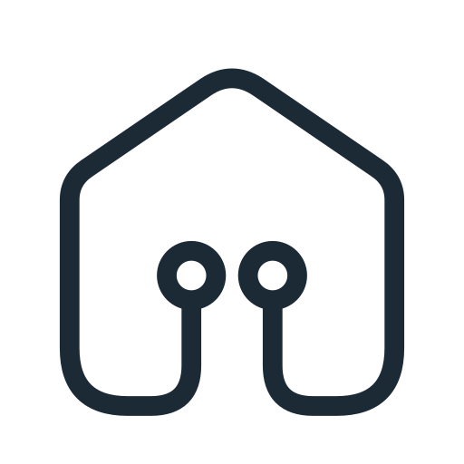
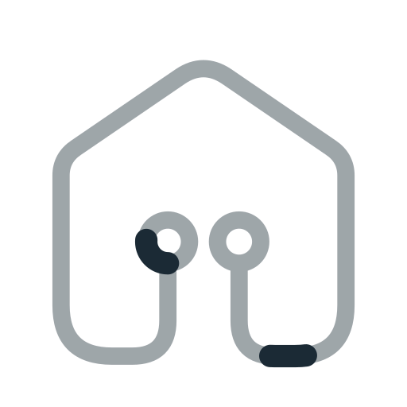

Statique : aucun segment de données. Animé : flux monochrome continu. PNG transparents, exports animés capturés à un instant fixe.
Symbole seul · statique

Symbole seul · animé

Logo complet · statique
Logo complet · animé



